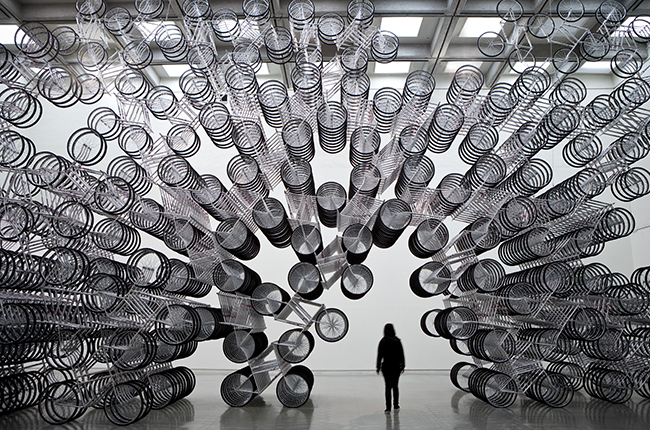
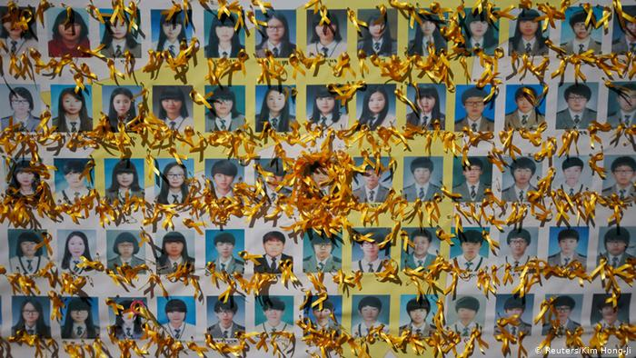
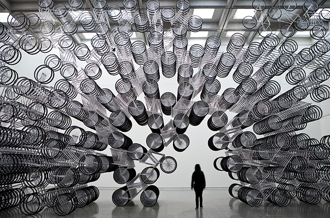
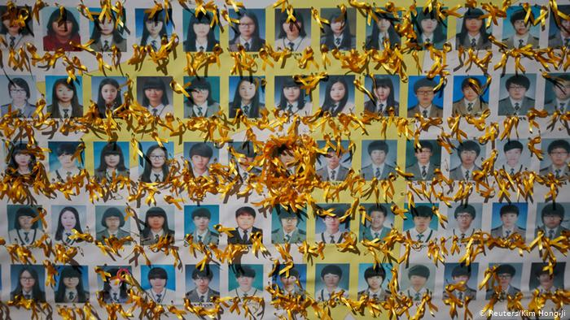
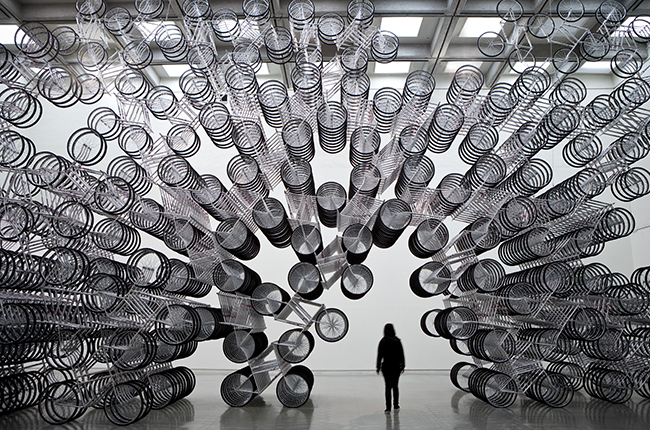
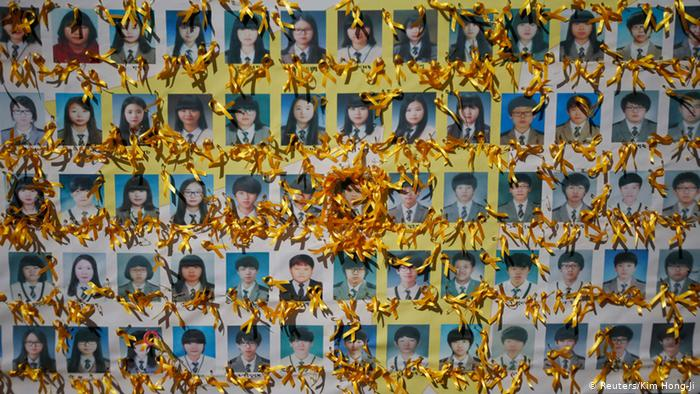
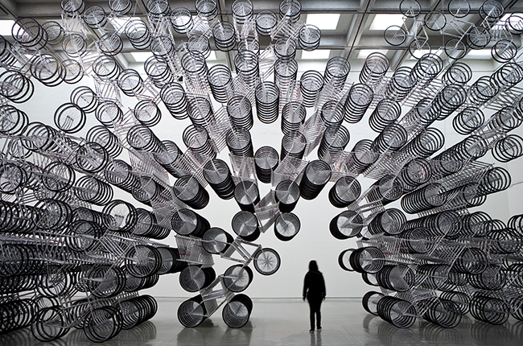
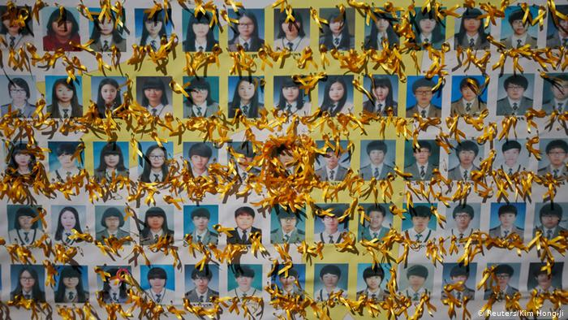

This Thursday, I attended Q&A session with Ai Weiwei organized by Kemper art museum. Ai Weiwei is a Chinese contemporary artist and activist. His works, ranging from photographs and films to large-scale installations, tackle political and ethical issues in China. His interest and “desire” to challenge the corruption of Chinese government extends to the universal idea of human rights and dignity issues around the world.
Some of his works had significance relevance to his family background, as well as his personal experience in growing up under the corrupted government. During his interview, he mentioned how important it is to remember and study the past as well as the present. One of his works from the Kemper Museum collection specifically explores the beautiful form of Chinese wooden furnitures and the fascinating functionality of them, which do not require any adhesives to join each part.
The event ended with a question, “Do you consider yourself as a patriot?” He answered without hesitation that he cares about his country, because he was born and raised there. Throughout his interview, he also seemed to accept that his works have been greatly influenced by his personal experience of the corrupted government and his family background. However, he said his primary interest now is challenging the ‘universal’ issue of human rights and ethics that are happening around the world.
Growing up in South Korea, I have also encountered some issues that felt ethically wrong. When Ai Weiwei mentioned the 2008 Sichuan earthquake, which led to the death of nearly 70,000 civilians including children that died from poorly constructed school buildings due to corruption, I was able to relate to the sinking of Sewol ferry occurred in 2014, South Korea.
304 people on board, most of them children, were found dead. Through investigation, it was found out that the captain illegally over-loaded the ferry for , which caused the ferry to tip over and eventually sink. Some crews, including the captain, left behind the passengers on the sinking ferry, without giving them any safety protocols or information.
The Sewol Ferry incident is still a huge controversial issue in Korea. Some people even feel unsafe and insecure to talk about the issue. Like Ai Weiwei, some art activists in Korea have made attempts to unravel and criticize the inhumane, unethical truth behind the incident, as well as the government, which handled the issue improperly. I was shocked by how more people are beginning to use art as propaganda to announce their thoughts and criticism against their own government.
The opening of exhibition for members of the Kemper art museum and the students is this Friday, September 27th. I look forward to seeing Ai Weiwei’s works in my own eyes. From his interviews, I became more interested in activism and activist art. I was mesmerized by how art could be a powerful tool and could empower voices of the people often neglected by the government.